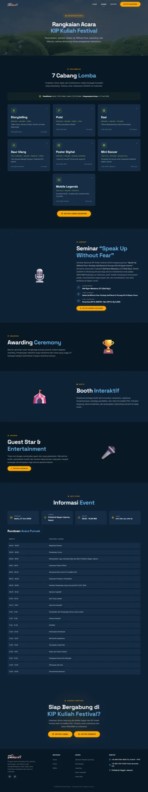
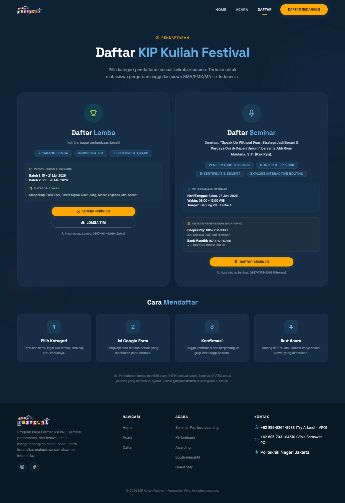
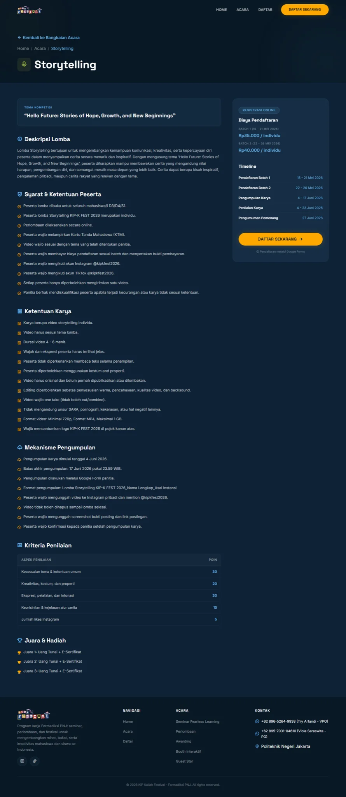

Pengembangan Website KIPK Festival
Peran
Frontend / Web Developer
Garis Waktu
Jan - Feb 2026
Klien / Organisasi
Kepanitiaan KIPK Festival 2026 (Formadiksi PNJ)
Teknologi
HTML, CSS, JavaScript, Vercel
Ringkasan Proyek
Website KIPK Festival merupakan platform digital resmi yang dirancang untuk mendukung kegiatan KIPK Festival 2026, sebuah acara tingkat nasional yang diselenggarakan oleh Formadiksi PNJ. Website ini berfungsi sebagai pusat informasi resmi sekaligus portal pendaftaran online bagi peserta seminar dan berbagai cabang perlombaan. Platform ini telah tayang dan dapat diakses publik melalui kipkfest.vercel.app.
Tantangan Proyek
Sebelumnya, penyebaran informasi dan alur pendaftaran peserta acara berskala nasional dilakukan melalui platform terpisah yang kurang terintegrasi. Hal ini memicu alur informasi yang lambat dan potensi ketidakjelasan informasi bagi calon peserta. Tantangan utamanya adalah membangun platform web yang responsif, terstruktur, dan bersih agar seluruh rangkaian acara, panduan perlombaan, serta alur pendaftaran dapat diakses secara cepat dan mudah oleh peserta dari berbagai perangkat.
Solusi & Desain Antarmuka
Platform web ini dirancang dengan berfokus pada estetika visual dark-mode yang modern, navigasi yang intuitif, serta struktur tata letak yang responsif. Website ini menyajikan informasi lengkap mengenai rangkaian acara festival, aturan detail setiap perlombaan, jadwal kegiatan, serta alur pendaftaran yang mudah dipahami oleh calon peserta.
Fitur-fitur frontend interaktif, penataan komponen yang rapi, serta publikasi cepat via Vercel memastikan calon peserta mendapatkan pengalaman jelajah yang mulus dan informasi resmi yang selalu terbarui secara real-time.
Fitur Utama Platform
- Desain antarmuka landing page dark-mode yang bersih dan responsif.
- Hierarki informasi terstruktur untuk rangkaian acara nasional.
- Halaman detail regulasi lomba dan jadwal kegiatan yang interaktif.
- Publikasi dan optimasi kecepatan akses platform via Vercel.



Hasil Akhir & Akses Platform
Platform website KIPK Festival 2026 telah sukses diluncurkan dan aktif dipublikasikan melalui Vercel di https://kipkfest.vercel.app/. Hasil pengujian membuktikan antarmuka yang responsif di berbagai perangkat, penyampaian informasi yang jelas dan terstruktur, serta performa kecepatan muat yang tinggi bagi calon peserta festival dari seluruh Indonesia.